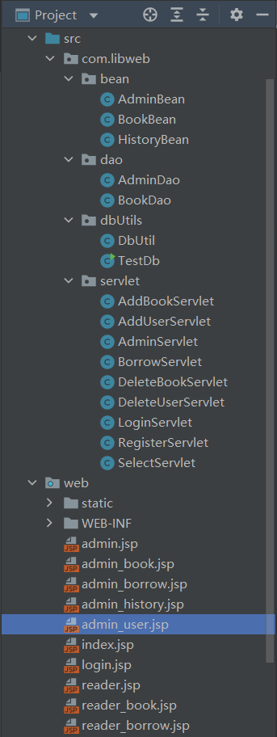

文章若有侵犯版权，请联系作者，我将迅速修改！
JavaWeb图书馆项目
项目目录结构：
前端
关于前端，采用了 JSP 页面实现前后端数据的交互。
其次，为了页面的动态变化，采用了 bootstrap 框架，引用以下三个文件：
- jquery.min.js——引用 jQuery 文件，bootstrap 是基于 jQuery 的，所以要添加 jQuery 文件的引用。
- bootstrap.min.css——bootstrap 的核心 CSS 样式文件。
- bootstrap.min.js——bootstrap 的核心 JavaScript 文件。
bootstrap 中的 js 插件依赖于 jQuery，因此一定要先引入 jquery.js 文件，才能用 bootstrap 插件，不然就会报错，效果显示不出来。
JSP
JSP 全称 Java Server Pages，是一种动态网页开发技术。它使用 JSP 标签在 HTML 网页中插入 Java 代码。
JSP 是一种 Java servlet，主要用于实现 Java web 应用程序的用户界面部分。
JSP 通过网页表单获取用户输入数据、访问数据库及其他数据源，然后动态地创建网页。
脚本程序
脚本程序可以包含任意量的Java语句、变量、方法或表达式。
语法格式：
1 | <% 代码片段 %> |
其等价的XML语句：
1 | <jsp:scriptlet> |
任何文本、HTML标签、JSP元素必须写在脚本程序的外面。
JSP 声明
一个声明语句可以声明一个或多个变量、方法，供后面的 Java 代码使用。在 JSP 文件中，您必须先声明这些变量和方法然后才能使用它们。
JSP 声明的语法格式：
1 | <%! declaration; [ declaration; ]+ ... %> |
或者，您也可以编写与其等价的XML语句，就像下面这样：
1 | <jsp:declaration> |
JSP 表达式
将表达式的值转化成 String，然后插显示出来。
语法格式：
1 | <= 表达式 > |
其等价的XML语句：
1 | <jsp:expression> |
JSP 指令
JSP 指令用来设置整个 JSP 页面相关的属性，如网页的编码方式和脚本语言。
语法格式如下：
1 | <%@ directive attribute="value" %> |
指令可以有多个属性，它们以键值对的形式存在，并用逗号隔开。
JSP 中的三种指令标签：
| 指令 | 描述 |
|---|---|
| <%@ page … %> | 定义网页依赖属性，为容器提供当前页面的使用说明，比如脚本语言、error 页面、缓存需求等等 |
| <%@ include … %> | 包含其他文件 |
| <%@ taglib … %> | 引入标签库的定义 |
JSP 行为
JSP 行为标签使用 XML 语法结构来控制 servlet 引擎。它能够动态插入一个文件，重用 JavaBean 组件，引导用户去另一个页面，为 Java 插件产生相关的 HTML 等等。
行为标签只有一种语法格式，它严格遵守 XML 标准。语法格式如下：
1 | <jsp:action_name attribute="value" /> |
行为标签基本上是一些预先就定义好的函数，下表是一些可用的 JSP 行为标签：
| 语法 | 描述 |
|---|---|
| jsp:include | 用于在当前页面中包含静态或动态资源 |
| jsp:useBean | 寻找和初始化一个JavaBean组件 |
| jsp:setProperty | 设置 JavaBean组件的值 |
| jsp:getProperty | 将 JavaBean组件的值插入到 output中 |
| jsp:forward | 从一个JSP文件向另一个文件传递一个包含用户请求的request对象 |
| jsp:plugin | 用于在生成的HTML页面中包含Applet和JavaBean对象 |
| jsp:element | 动态创建一个XML元素 |
| jsp:attribute | 定义动态创建的XML元素的属性 |
| jsp:body | 定义动态创建的XML元素的主体 |
| jsp:text | 用于封装模板数据 |
注意：在 jsp 标签中没有用于重定向的标签。
JSP 隐含对象
JSP 支持九个自动定义的变量，即隐含对象。
简介如下：
| 对象 | 描述 |
|---|---|
| request | HttpServletRequest 类的实例 |
| response | HttpServletResponse 类的实例 |
| out | PrintWriter 类的实例，用于把结果输出至网页上 |
| session | HttpSession 类的实例 |
| application | **ServletContext ** 类的实例，与应用上下文有关 |
| config | **ServletConfig ** 类的实例 |
| pageContext | PageContext 类的实例，提供对JSP页面所有对象以及命名空间的访问 |
| page | 类似于 Java 类中的 this 关键字 |
| Exception | Exception 类的对象，代表发生错误的 JSP 页面中对应的异常对象 |
控制流语句
JSP 提供对 Java 语言的全面支持。你可以在 JSP 程序中使用 Java API 甚至建立 Java 代码块，包括判断语句和循环语句等等。
判断语句
If…else 块，例如：
1 | <%! int day = 3; %> |
switch…case 块与 if…else 块有很大的不同：
- 使用
out.println()； - 整个都装在脚本程序的标签中；
例如：
1 | <%! int day = 3; %> |
循环语句
在 JSP 程序中可以使用 Java 的三个基本循环类型：for，while，和 do…while。
for 循环，例如：
1 | <%! int fontSize; %> |
while 循环，例如：
1 | <%! int fontSize; %> |
JSTL 标签库
JSP 标准标签库（JSTL）是一个 JSP 标签集合，它封装了 JSP 应用的通用核心功能。
根据 JSTL 标签所提供的功能，可以将其分为5个类别：
- 核心标签
- 格式化标签
- SQL 标签
- XML 标签
- JSTL 函数
如果要使用 JSTL 标签库，我们首先要做的就是引入相应的 jar 包，下载 jakarta-taglibs-standard-1.1.2.zip，将 standard.jar 和 jstl.jar 文件拷贝到 /WEB-INF/lib/ 下。如果使用 IDEA 开发 JSP 应用，在项目结构中的模块选项，选择添加 JSTL 标签库依赖。
有时候我们在 jsp 页面上要嵌套大量的 Java 代码，会使源码复杂且难以维护，所以我们就可以利用 JSTL 标签库解决这个问题。
核心标签
核心标签库是最常用的 JSTL 标签。引用核心标签库的语法如下：
1 | <%@ taglib prefix="c" |
| 标签 | 描述 |
|---|---|
<c:out> |
用于在 JSP 中显示数据，就像 <%= … > |
<c:set> |
用于保存数据 |
<c:remove> |
用于删除数据 |
<c:catch> |
用来处理产生错误的异常情况，并将错误信息存储起来 |
<c:if> |
与我们在一般程序中用的 if 一样 |
<c:redirect> |
重定向至一个新的URL |
<c:url> |
使用可选的参数来创造一个URL |
格式化标签
格式化标签用来格式化并输出文本、日期、时间、数字。引用格式化标签库的语法如下：
1 | <%@ taglib prefix="fmt" |
| 标签 | 描述 |
|---|---|
<fmt:formatNumber> |
使用指定的格式或精度格式化数字 |
<fmt:formatDate> |
解析一个代表着日期或时间的字符串 |
<fmt:message> |
显示资源配置文件信息 |
SQL 标签
JSTL SQL 标签库提供了与关系型数据库（Oracle，MySQL等）进行交互的标签。引用 SQL 标签库的语法如下：
1 | <%@ taglib prefix="sql" |
| 标签 | 描述 |
|---|---|
<sql:setDataSource> |
指定数据源 |
<sql:query> |
运行SQL查询语句 |
<sql:update> |
运行SQL更新语句 |
<sql:param> |
将SQL语句中的参数设置为指定值 |
XML 标签
JSTL XML 标签库提供了创建和操作 XML 文档的标签。引用 XML 标签库的语法如下：
1 | <%@ taglib prefix="x" |
在使用xml标签前，你必须将 XML 和 XPath 的相关包拷贝至你的 <Tomcat 安装目录>\lib 下:
XercesImpl.jar
xalan.jar
| 标签 | 描述 |
|---|---|
<x:out> |
与<%= … >,类似，不过只用于XPath表达式 |
<x:parse> |
解析 XML 数据 |
<x:set> |
设置XPath表达式 |
<x:if> |
判断XPath表达式，若为真，则执行本体中的内容，否则跳过本体 |
<x:param> |
将XSL转换应用在XML文档中 |
JSTL 函数
JSTL 包含一系列标准函数，大部分是通用的字符串处理函数。引用 JSTL 函数库的语法如下：
1 | <%@ taglib prefix="fn" |
| 函数 | 描述 |
|---|---|
fn.contains() |
测试输入的字符串是否包含指定的子串 |
fn.endsWith() |
测试输入的字符串是否以指定的后缀结尾 |
fn.indexOf() |
返回指定字符串在输入字符串中出现的位置 |
fn.join() |
将数组的元素合成一个字符串然后输出 |
EL 表达式
为了简化 JSP 页面，JSP 2.0（目前最新） 新增了 EL（Expression Language）表达式语言。EL 提供了更为简洁、方便的形式来访问变量和参数。
EL 语法
1 | ${EL表达式} |
EL 表达式语法以 ${ 开头，以 } 结束，中间为合法的表达式。
示例：
${param.name} 表示获取参数 name 的值，等同于 <%= request.getParameter('name') %>。
EL 运算符
| 类别 | 运算符 | 示例 | 注意 |
|---|---|---|---|
| 算术运算符 | +（加）、-（减）、*（乘）、/ 或 div（除）、% 或 mod（求余） | ${5+2} | EL 中的加法（+）无法进行字符串间的连接运算 |
| 比较运算符 | == 或 eq（等于）、!= 或 ne（不等于）、< 或 lt（小于）、> 或 gt（大于）、<= 或 le（大于等于）、>= 或 ge（大于等于） | ${3>8} | 返回值为 Boolean 值 |
| 逻辑运算符 | && 或 and（与）、|| 或 or（或）、! 或 not（非） | ${2>1&&3<4} | 返回值为 Boolean 值 |
| 其它运算符 | . 和 [] 用来访问 JavaBean 中的属性和隐式对象的数据empty 用来判断 EL 表达式中的对象或者变量是否为空${条件表达式?表达式1:表达式2} 条件运算符 |
${empty cart?”购物车为空”:cart} | 无 |
| 序号 | 优先级 |
|---|---|
| 1 | [] . |
| 2 | () |
| 3 | -（负）、not、! 、empty |
| 4 | * 、 / 、 div 、% 、mod |
| 5 | +、-（减） |
| 6 | <、>、<=、>=、lt、gt、le、ge |
| 7 | ==、!-、eq、ne |
| 8 | &&、and |
| 9 | ||、or |
| 10 | ${A?B:C} |
禁用 EL 表达式
禁用 EL 表达式的 3 种方法：
禁用单个 EL 表达式
在 EL 表达式前加
\，例如：1
\${2+3}
禁用当前页面的 EL 表达式
将 page 指令中的 isELIgnored 属性设置为 true，如下：
1
<%@ page isELIgnored="true" %>
禁用整个 Web 应用的 EL 表达式
在 web.xml 中配置
<el-ignored>元素，如下：1
2
3
4<jsp-property-group>
<url-pattern>*jsp</url-pattern>
<el-ignored>false</el-ignored>
</jsp-propery-group>
EL 内置对象
为了显示方便，EL 表达式语言提供了许多内置对象，可以通过不同的内置对象来输出不同的内容。EL 表达式内置对象如下：
| 内置对象 | 说明 |
|---|---|
| pageScope | 获取 page 范围的变量 |
| requestScope | 获取 request 范围的变量 |
| sessionScope | 获取 session 范围的变量 |
| applicationScope | 获取 application 范围的变量 |
| param | 相当于 request.getParameter(String name)，获取单个参数的值 |
| paramValues | 相当于 request.getParameterValues(String name)，获取参数集合中的变量值 |
| header | 相当于 request.getHeader(String name)，获取 HTTP 请求头信息 |
| headerValues | 相当于 request.getHeaders(String name)，获取 HTTP 请求头数组信息 |
| initParam | 相当于 application.getInitParameter(String name)，获取 web.xml 文件中的参数值 |
| cookie | 相当于 request.getCookies()，获取 cookie 中的值 |
| pageContext | 表示当前 JSP 页面的 pageContext 对象 |
从以上表格可以看出，EL 表达式可以输出 4 种属性范围的内容。如果在不同的属性范围中设置了同一个属性名称，则按照 page、request、session、application 的顺序依次查找。我们也可以指定要取出哪一个范围的变量，例如：${pagesScope.name}，表示取出 page 范围的 name 变量。
Bootstrap 框架
Bootstrap 是一个用于快速开发 Web 应用程序和网站的前端框架。Bootstrap 是基于 HTML、CSS、JavaScript 的。
在官网上下载 Bootstrap 的最新版本，包含 Bootstrap CSS、JavaScript 和字体的预编译的压缩版本。
网格系统
Bootstrap 包含了一个响应式的、移动设备优先的、不固定的网格系统，可以随着设备或视口大小的增加而适当地扩展到 12 列。

- 行必须放在
.containerclass 内，以便获得适当的对齐（alignment）和内边距（padding）。 - 使用行（row）来创建列的水平组。
- 内容应该放在列中，且唯有列可以是行的直接子元素。
- 预定义的网格类，比如
.row和.col-xs-4，可用于快速创建网格布局。LESS 混合类可用于更多语义布局。 - 网格系统是通过指定想要横跨的十二个可用的列来创建的。例如，创建三个相等的列，则使用三个
.col-xs-4。
下表总结了 Bootstrap 网格系统如何跨多个设备工作：
| 超小设备手机（<768px） | 小型设备平板电脑（≥768px） | 中型设备台式电脑（≥992px） | 大型设备台式电脑（≥1200px） | |
|---|---|---|---|---|
| 网格行为 | 一直是水平的 | 以折叠开始，断点以上是水平的 | 以折叠开始，断点以上是水平的 | 以折叠开始，断点以上是水平的 |
| 最大容器宽度 | None (auto) | 750px | 970px | 1170px |
| Class 前缀 | .col-xs- | .col-sm- | .col-md- | .col-lg- |
| 列数量和 | 12 | 12 | 12 | 12 |
| 最小列宽 | Auto | 60px | 78px | 95px |
| 间隙宽度 | 30px （一个列的每边分别 15px） | 30px （一个列的每边分别 15px） | 30px （一个列的每边分别 15px） | 30px （一个列的每边分别 15px） |
| 可嵌套 | Yes | Yes | Yes | Yes |
| 偏移量 | Yes | Yes | Yes | Yes |
| 列排序 | Yes | Yes | Yes | Yes |
1 | /* 基本的网络结构 */ |
1 | /* 偏移列 */ |
字体图标
1 | <span class="glyphicon glyphicon-search"></span> |
glyphicon class 表示使用字体图标，glyphicon-search 特指字体图标中的一个。
自定义字体图标的样式：
在父元素中定义 style 属性，并设置相应规则。
例如：
2
3
<span class="glyphicon glyphicon-user"></span> User
</button>同理，可以设置字体图标的颜色（color）和阴影（text-shadow）等。
下拉菜单
基本格式：
1 | <div class="dropdown"> |
如果需要使用下拉菜单，只需要在 class .dropdown 引用插件即可。
在 class 为 dropdown 的元素内添加菜单主体：
- 触发器：始终显示，需设置
href="#" data-toggle="dropdown"，点击显示菜单。 - 菜单内容：由 class 为
dropdown-menu的 ul 元素包裹，li 是菜单中的每一个项。另外，你可以通过 class 给下拉菜单添加额外内容和效果，例如，标题（.dropdown-header）和分割线（.divider）等。
面板
面板组件（Panels），用于把 DOM 组件插入到一个盒子中。创建一个基本的面板，只需要向 <div> 元素添加 class .panel 和 class .panel-default 即可。
基本结构如下：
1 | <div class="panel panel-default"> |
面板分为两个部分，首部和主体。
导航栏
导航栏可以在应用或网站中作为导航页头的响应式基础组件。
基本结构：
- 向
<nav>标签添加 class.navbar、navbar-default，包裹整个导航栏。 - 向
<div>元素添加一个标题 class.navbar-header，作为导航栏标题。 - 除了导航条
navbar-nav，在导航栏中还可以添加表单（navbar-form）、按钮（navbar-btn）、文本（navbar-text）等。
1 | <nav class="navbar navbar-default" role="navigation"> |

模态框
模态框（Modal）是覆盖在父窗体上的子窗体，可提供信息、交互等。
基本结构：
1 | <!-- 触发模态框 --> |
注意：在触发元素中，其中需要包含的属性，第一个是 data-toggle，指以什么事件触发，相当于告诉浏览器你是一个什么组件；第二个是 data-target，指事件的设置目标，相当于告诉浏览器你要操作那个元素。
一起使用就是代表 data-target 所指的元素以 data-toggle 指定的形式显示。
在模态框组件的根标签上，class
.modal用来把<div>的内容识别为模态框；class.fade实现内容的淡入淡出。关于模态框关闭按钮：**class=”close”，是一个 CSS class，为模态窗口的关闭按钮设置样式；data-dismiss=”modal”**，是一个自定义的 HTML5 data 属性，用于实现关闭模态窗口。例如：
1
<button type="button" class="btn btn-default" data-dismiss="modal">关闭</button>
表单
垂直表单：
- 默认为垂直元素，
<form>元素中 class 属性为空。 - 把标签和控件放在一个带有 class
.form-group的<div>中，这是获取最佳间距所必须的。 - 向所以的文本元素
<input>、<textarea>和<select>添加 class.form-control。
1 | <form> |
内联表单：
它的所有元素是内联的，向左对齐的，标签是并排的，向 <form> 标签添加 class .form-inline。
- 使用 class
.sr-only（screen reader only），可以隐藏内联表单的标签。
1 | <form class="form-inline"> |

水平表单：
- 向父
<form>元素添加 class.form-horizontal。 - 把标签和控件放在一个带有 class
.form-group的<div>中。 - 向所以的文本元素
<input>、<textarea>和<select>添加 class.form-control。 - 向标签添加 class
.control-label。 - 需要给水平布局的元素分配宽度，即网格系统的列数量。
1 | <form class="form-horizontal"> |
表格
基本结构：
1 | <table class="table"> |
- 在 class 属性添加特定属性值，条纹表格（table-striped）、边框表格（table-bordered）、悬停表格（table-hover，当指针悬停在行上时会出现浅灰色背景）、精简表格（table-condensed）。
- 响应式表格，通过把任意的
.table包在.table-responsiveclass 内，可以让表格水平滚动以适应小型设备。
应用实例
和 java 中的导包是一样的，将你需要的类导入 jsp 页面。
1 | <%@ page import="java.util.*" pageEncoding="UTF-8" %> |
在 <% ... %> 标签中插入 java 语句：
B/S 架构中，客户端与服务器连接，在服务端就会自动创建一个 session 对象。
session.setAttribute(“name”,value)设置 session 中的属性，可以是一个具体值，也可以是一个引用值；session.getAttribute(“name”)获得 session 对象属性。例如，当用户已登录系统后，你可以在 session 中存储了一个用户信息对象，此后你可以随时从 session 中将这个对象取出来进行一些操作，比如进行身 份验证等等。
接下来的是创建一个 AdminDao、AdminBean 和 BookDao，供后面使用。
1 | <% |
首先创建了一个表格，通过 Bootstrap 实现了边框表格和悬停表格；
嵌入 java 语句，创建泛型类型为 BookBean 的数组集合，调用 BookDao 的 get_ListInfo() 方法将书籍信息对象赋给 bookdata；
1 | <table id="data_list" class="table table-hover table-bordered"> |
1 | <script type="text/javascript"> |
在表格主体内，通过 JSP 表达式将书本信息显示在表格，添加一个按钮，可以传值给 JS 函数；
设置URL，location.href = "DeleteServlet?bid=" + bid;，调用 Servlet 处理类并传入一个参数。
类似的，可以提交表单给 Servlet 类处理，由 Servlet 容器与数据库等进行交互。
1 | <form class="form-horizontal" action="SelectServlet" method="post"> |
class：表单类，由 bootstrap CSS 提供样式；action：发送表单数据的目的地；method：发送表单数据的方法；
后端
一般使用 JSP 技术开发 Web应用，后端可以分为以下四个部分：
Bean：存放数据。存放来自于数据库的数据；存放来自客户端的数据（表单提交），存数据的中介作用。
Dao：数据访问对象，主要做的事情就是对数据库单表进行增删改操作，以及其他的操作。
Service: 对应界面上的操作，增删改查，处理数据，至于业务涉及到几个 dao，就调用几个 dao。
Servlet：
接受用户请求，进行处理（
doget/dopost）调用 service，得到数据。doGet/doPost(HttpServletRequest request, HttpServletResponse response)做出响应（HTML）：通过
PrintWriter out = response.getWriter();可以 out 输出 HTML 代码。
业务流程：
1 | graph LR |

由于项目大小有限，为简化项目结构，将界面操作功能的实现（service）与实体操作放在了一起。
本项目后端实现为：JDBC+Tomcat+Beans+Dao+Servlet，即在 Tomcat 服务器测试运行项目，由 beans 存储数据交换中的实体，dao 负责有关 bean 实体的数据处理操作，servlet 负责处理请求和数据处理，JDBC 负责与 SQL 数据库的连接和访问。所有的组成部分共同实现了前后端的数据交换和动态页面。
接下来，我将分阶段解释各个部分的功能。
JDBC
Sun 公司于1996年提供了一套访问数据的标准 Java 类库，即 JDBC。
JDBC 的全称是 Java 数据库连接（Java Database connect），它是一套用于执行 SQL 语句的 Java API。应用程序可通过这套 API 连接到关系数据库，并使用 SQL 语句来完成对数据的查询、更新和删除等操作。

从上图可知，应用程序使用 JDBC 访问特定的数据库时，需要与不同的数据库驱动进行连接，而且每个不同的数据库厂商提供的数据库驱动都不是不一样的。为了使应用程序与数据库建立真正连接，JDBC 向上提供访问数据库的 API，向下封装与各种数据库服务器通信的细节。
根据上文，JDBC 的实现包括三部分：
JDBC 驱动器 API：由 Sun 公司负责制定，其中最主要的接口是
java.sql.Driver，这是一个所有 JDBC 驱动程序都必须实现的接口；JDBC 驱动器：由数据库厂商创建的数据库驱动，实现了 JDBC 驱动器 API，负责与特定的数据库连接，以及处理通信细节；
JDBC 驱动管理器：负责注册特定的 JDBC 驱动器，主要通过
java.sql.DriverManager类实现；
例如，自定义的数据库工具类：
1 | package com.libweb.dbUtils; |
注意：在项目结构中，添加库文件 mysql-connector-java-x.x.xx.jar，即 MySQL 提供的 JDBC 驱动包，用 JDBC 连接 MySQL 数据库时必须使用该 jar 包。

Tomcat
在市场上有许多 Web 应用服务器支持 Servlet，Tomcat 就是其中一个。
Apache Tomcat 是一款 Java Servlet 和 Java Server Pages 技术的开源软件实现，可以作为测试 Servlet 的独立服务器，而且可以集成到 Apache Web 应用服务器。
注意：电脑上安装 Tomcat，需要创建并设置 CATALINA_HOME 环境变量。
通过运行 startup.bat 脚本启动服务器，接下来可以在服务器的资源目录下放置资源文件（html）并在浏览器中渲染和访问。
Servlet
Java Servlet 是运行在 Web 服务器或应用服务器上的程序，它是作为来自 Web 浏览器或其他 HTTP 客户端的请求和 HTTP 服务器上的数据库或应用程序之间的中间层。
Servlet 可以使用 javax.servlet 和 javax.servlet.http 包创建。
使用 Servlet，你可以收集来自网页表单的用户输入，呈现来自数据库或者其他源的记录，还可以动态创建网页。
下图显示 servlet 在 web 应用程序中的位置：

Java Servlet 是运行在带有支持 Java Servlet 规范的解释器的 web 服务器上的 Java 类。
可以使用 javax.servlet 和 javax.servlet.http 包创建，它是 Java 企业版的标准组成部分，Java 企业版是支持大型开发项目的 Java 类库的扩展版本。
Java Servlet 就像任何其他的 Java 类一样已经被创建和编译。在您安装 Servlet 包并把它们添加到您的计算机上的 Classpath 类路径中之后，您就可以通过 JDK 的 Java 编译器或任何其他编译器来编译 Servlet。
Servlet 生命周期
Servlet 生命周期可被定义为创建直到毁灭的整个过程：
- Servlet 初始化后调用
init()方法； - Servlet 调用
service()方法来处理客户端的请求； - Servlet 销毁前调用
destroy()方法； - 最后，Servlet 由 JVM 的垃圾回收器进行回收；
init 方法：在第一次创建 Servlet 时被调用，在后续每次用户请求时不再调用。init() 方法简单地创建或加载一些数据，这些数据将被用于 Servlet 的整个生命周期。
当用户调用一个 Servlet 时，就会创建一个 Servlet 实例，每一个用户请求都会产生一个新的线程，适当的时候移交给 doGet 或 doPost 方法。
service 方法：Servlet 容器（即 Web 服务器）调用 service() 方法来处理来自客户端的请求，在适当的时候调用 doGet、doPost、doPut 或 doDelete 方法，并把格式化的响应写回给客户端。
你不用对 service() 方法做任何动作，只需要根据来自客户端的请求类型来重写 doGet() 或 doPost() 即可。
destroy 方法：只会被调用一次，在 Servlet 生命周期结束时被调用，例如，在 destroy 方法中执行关闭数据库连接、写入 Cookie 列表到外存等操作。
实例分析
实现添加书籍功能的 AddBookServlet 类：
1 | package com.libweb.servlet; |
Servlet3.0 提供了注解（annotation），我们可以不用再 web.xml 里面配置 servlet，只需要加上 @WebServlet 注解就可以修改该 servlet 的属性了。
web.xml 可以配置的 servlet 属性，在 @WebServlet 中都可以配置。
在 web.xml 中：
1 | <servlet> |
用了 @WebServlet 注解后，只需要在原来的 Servlet 类上面加上 @WebServlet("/AddBookServlet")；
dao
dao 层叫数据访问层，属于一种比较底层，比较基础的操作类，具体到对于某个表的增删改查；
由于需实现的服务大多只涉及一个实体类，为简化项目结构，将 dao 类需实现的基本方法（例如，addBook）和 service 中的服务方法（例如，get_ListInfo）一起放在 dao 类中；
1 | package com.libweb.dao; |
每个方法都需要执行 SQL 语句变更数据库，注意最后需要关闭连接以节省资源；
bean
bean 是实体类，即一个载体，其主要职责是存储和管理系统内部的信息，它总是和数据库之类的（持久层数据）联系在一起。
共三类 Bean，AdminBean、BookBean 和 HistoryBean。每个类都包含属性和相应的 set 和 get 方法：
1 | package com.libweb.bean; |